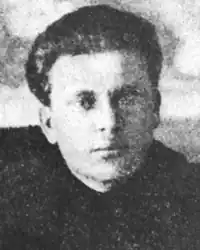

Іван Улянович Кириленко — український письменник (переважно прозаїк).
Народився 2 грудня 1903 року у с. В'язівок, Павлоградський повіт.Закінчив Павлоградську православну семінарію РПЦ (1921), при цьому брав активну участь у подіях "війни проти всіх" на Лівобережній Україні. Вступивши до ВКП(б) 1927, навчався у Харківських комуністичних навчальних закладах. Тоді ж починається його контраверсійна літературна кар'єра, яка супроводжувалася його вправами у вульгарній літературній критиці "у дусі часу" — часу совєцької цензури та партійного наклепництва.
Член літературної організації "Плуг". Редактор журналу "Червоний шлях" та відповідальний секретар Спілки письменників України. Автор переважно плакатно-ідеологічних творів "виробничого жанру". Особистий секретар голови Всеукраїнського центрального виконавчого комітету Григорія Петровського. Жертва сталінського терору. Помер 23 вересня 1938 року, тюрма НКВС СРСР. Належав до Спілки селянських письменників "Плуг", Спілки пролетарських письменників "Гарт", Всеукраїнської спілки пролетарських письменників. Друкувався з 1923, але першу книжку видав 1926 — це збірка оповідань "Відступ". Потім були збірки "Стихія", "Одна баба", "Над ямою". Єдина збірка поезій — "Такти" (1927). Став відомим завдяки повістям "Курси" (1927), "Кучеряві дні" (1928, рос. переклад 1931), "Натиск" (1930, рос. переклад 1937). Будучи особистим секретарем високопоставленого комуніста Петровського, брав участь у приховуванні акції геноциду проти українського народу, проведеного за наказами Й. Сталіна у 1932—33 роки. Саме в цей час випускає нову повість "Аванпости" (1933) та роман "Перешихтовка" (1932). Останній твір, виданий за його життя, роман "Весна" (1936). Кириленко до певної міри одіозна літературна постать навіть у контексті 1920—30-их років. Тодішня критика змушена була визнавати явну плакатність творів Кириленка, схематичність подання характерів членів урядових організацій — комсомолу та ВКП(б). Загалом, Кириленко спеціалізувався на створенні образів фанатичних працівників-"передовиків", оспівуванні рабської праці на комуністичних каторгах, пропагував безумовну покору терористичним урядовим групам. За свідченням сучасників, користувався недоброю славою серед своїх же однопартійців-письменників — за певними даними, мав розлади психіки. Наближеність до улюбленця Сталіна Григорія Петровського не захистила Кириленка від звинувачень у контрреволюції та шпигунстві.